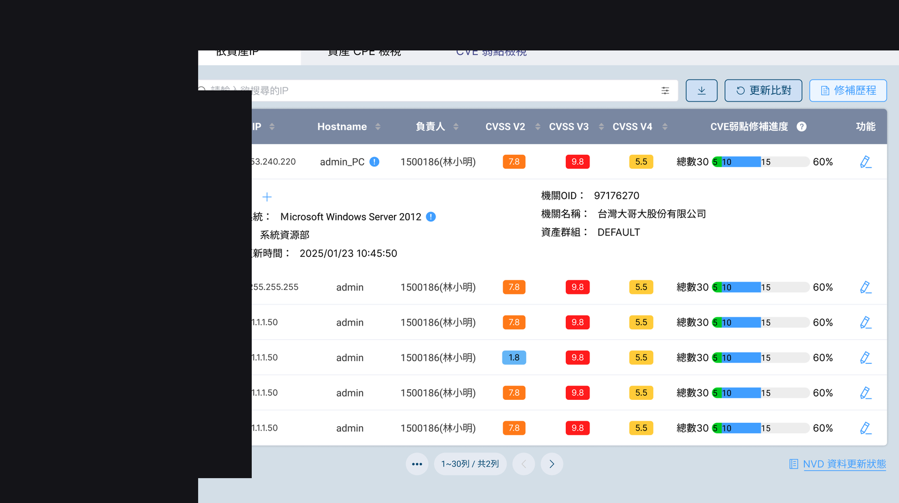
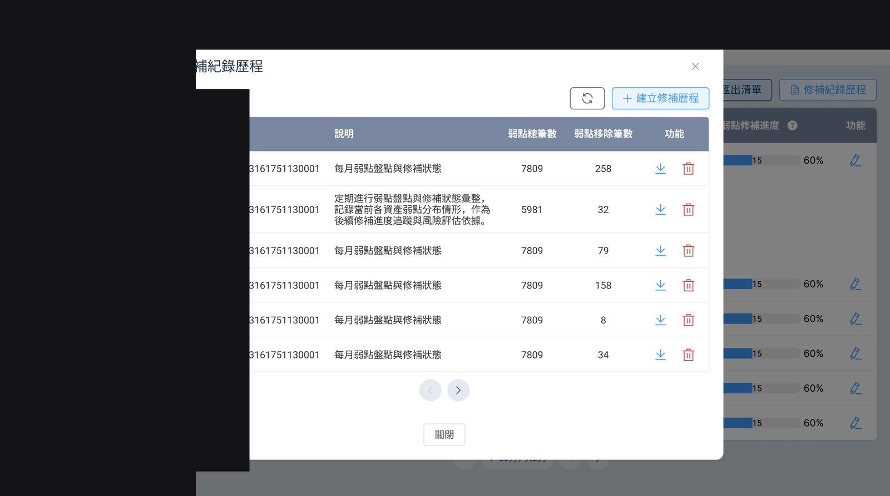
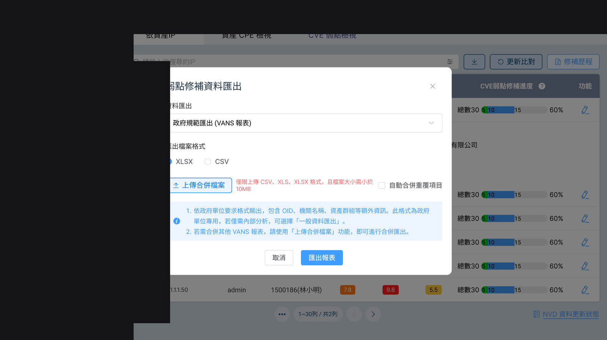

問題
資產盤點、弱點修補與稽核舉證分散，難對齊法規與 ISO 要求。
解法
統一平台：資產檢視、弱點狀態分流、CVE／嚴重度、修補紀錄與 Agent 更新。
成果
對應申報／內部報告場景，可證明更新進度並留存查核證據。
- 對應政府／資安署申報與內部報告場景
- 可證明 Windows 更新進度是否合規
- Email／查核證據留存情境被點名為使用時機（簡報條列）
視覺敘事





資產盤點、弱點修補與稽核舉證分散，難對齊法規與 ISO 要求。
統一平台：資產檢視、弱點狀態分流、CVE／嚴重度、修補紀錄與 Agent 更新。
對應申報／內部報告場景，可證明更新進度並留存查核證據。


